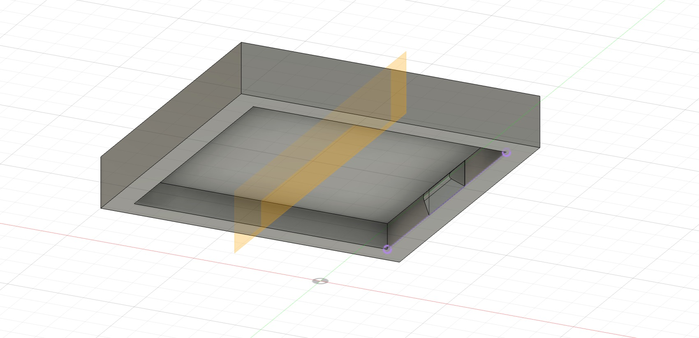
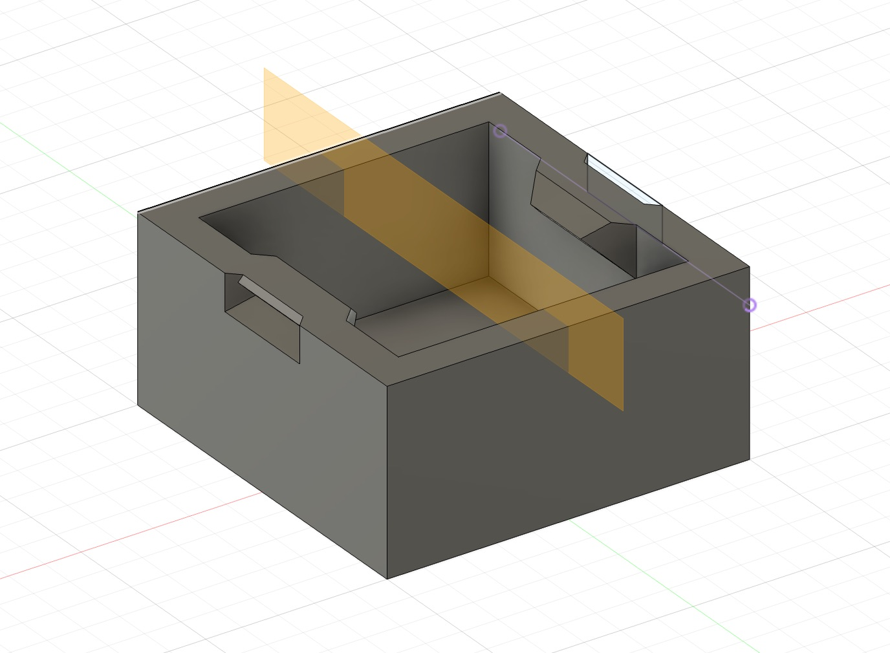
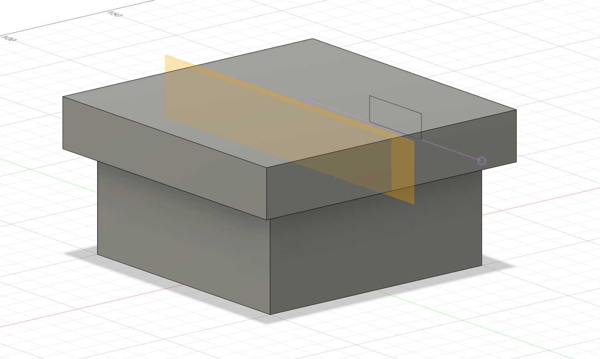
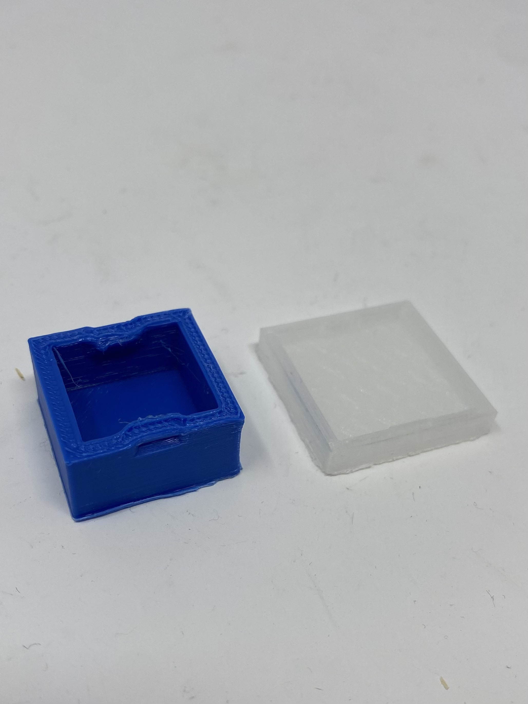
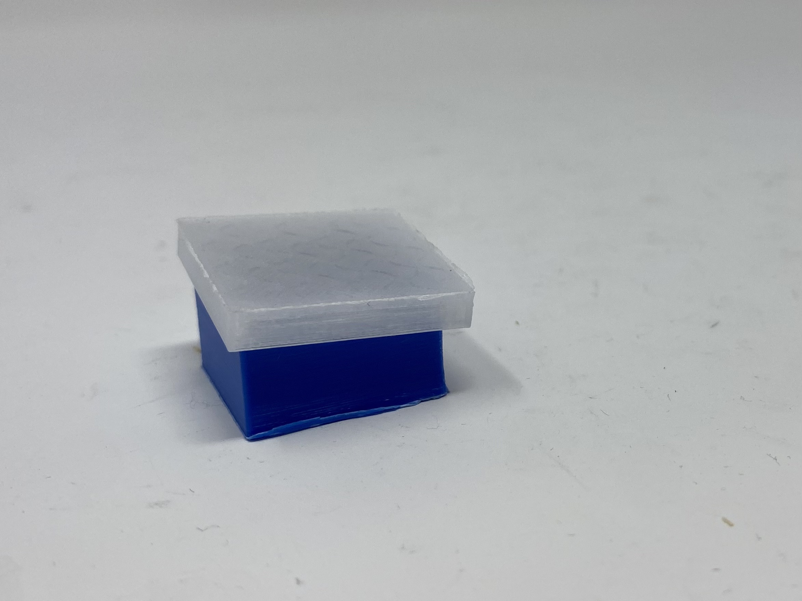
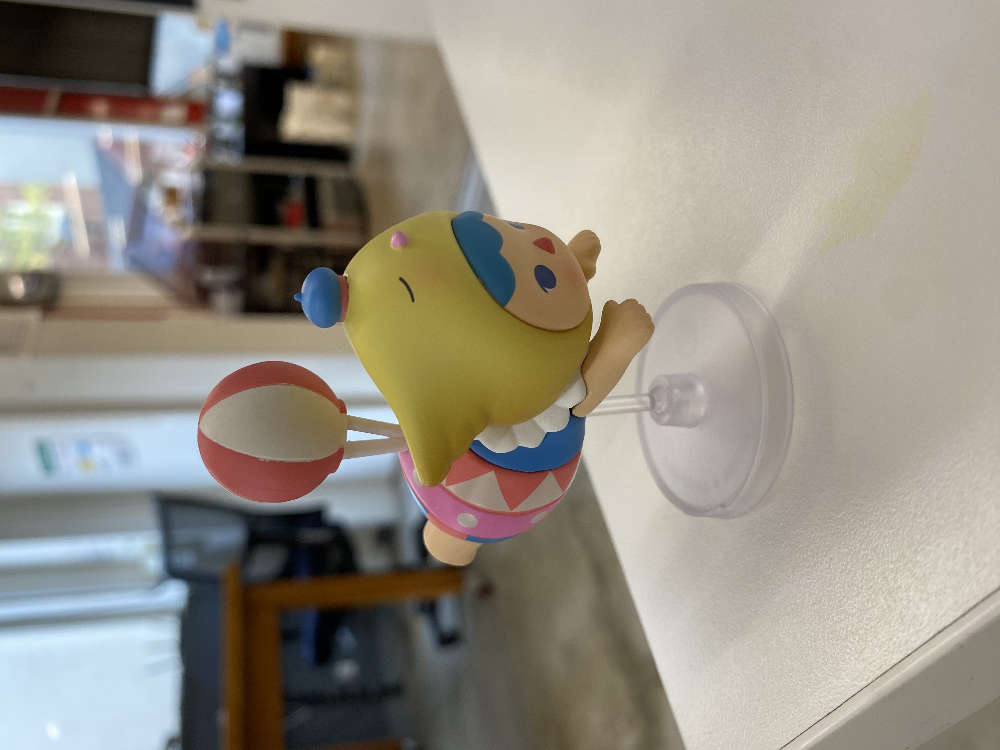
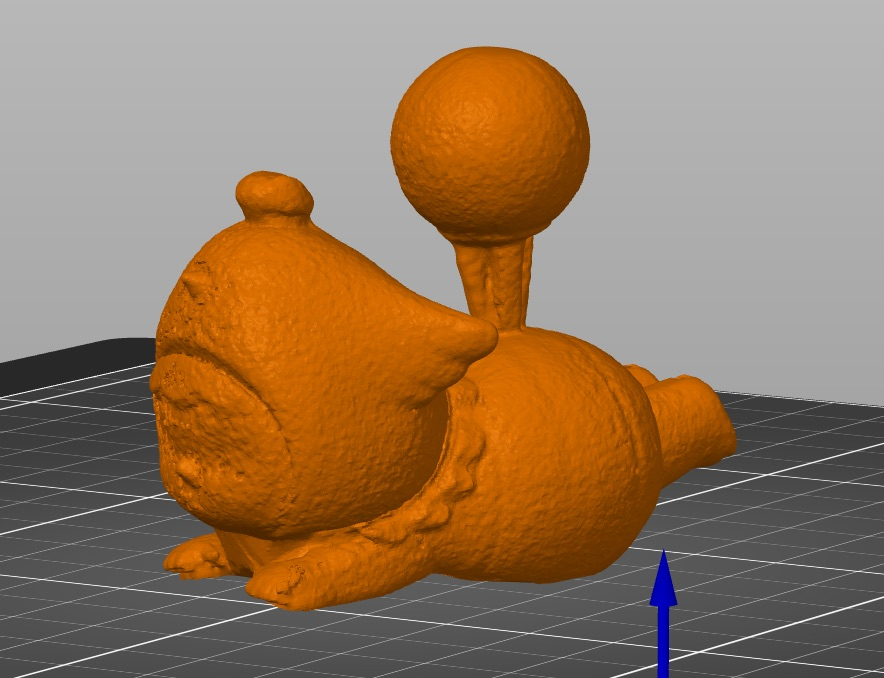
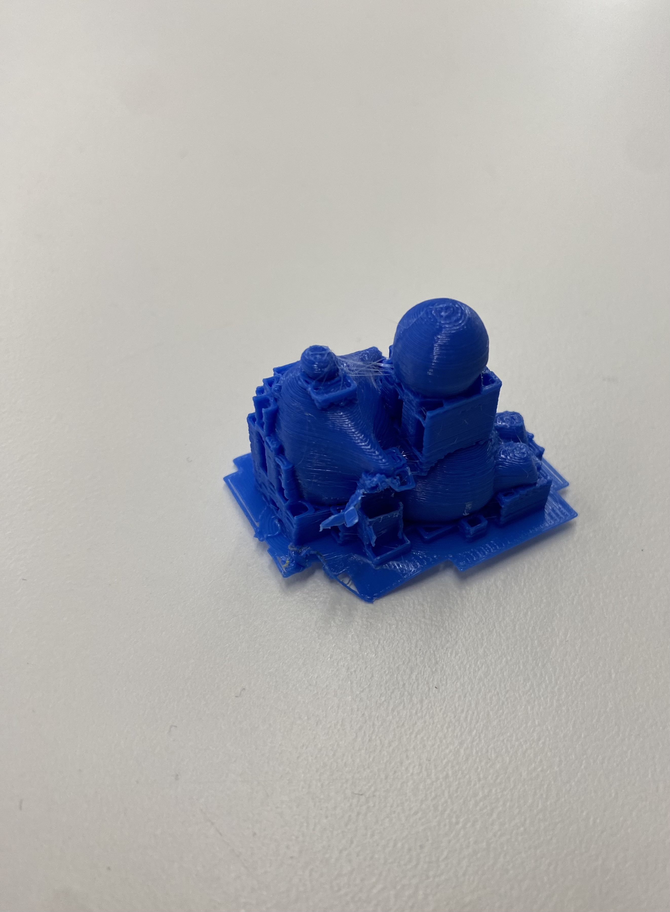

<h1 style= "text-align: center;">
Week 5: 3D Design & Printing </b></h1>
This week's assignment is to (1) design and print a small object that couldn't easily be made by other methods (2) scan something using photogrammetry and (3) update my website with more info about my final project, including a finalized 3D model of the project, a bill of materials and a timeline. The third part of this weeks assignment can be found in the week 1 part of my website.
<h2 style= "text-align: center;">
Part 1: 3D Design </b></h2>
For my 3D design this week, I wanted to make a press-fit box. I followed a YouTube video tutorial which can be <a href="https://www.youtube.com/watch?v=YCUkFGI3RZI"> found here.</a>
Attached below are the links to my STL files from my design.
<a href="Body3.stl" download="Body3.stl">Download STL file of my body piece. </a>
<a href="Body4.stl" download="Body4.stl">Download STL file of my lid piece. </a>
Here are the gcode files to download as well.
<a href="lid.gcode" download="lid.gcode">Download gcode file of my lid piece. </a>
<a href="body.gcode" download="body.gcode">Download gcode file of my body piece. </a>
Here are pictures of my 3D model, screenshotted from Fusion360 and two printed out pictures of my first iterations.
<div class="image-container" style="margin-bottom: 20px; ; text-align: center;">



</div>
<div class="image-container" style="margin-bottom: 20px; ; text-align: center;">


</div>
<h2 style= "text-align: center;">
Part 2: Scanning </b></h2>
For scanning using photogrammetry, I chose this figurine to scan.
<div class="image-container" style="margin-bottom: 20px; ; text-align: center;">

</div>
The scan came out very good and I proceeded to upload it onto PrusaSlicer to 3D print it (originally, I thought we could 3D print our scan for this weeks assignment). Here's what it looked like on PrusaSlicer and then 3D printed (the supports were too stuck to the print so it didn't come out very well).
<a href="amy3.stl" download="amy3.stl">Download STL file of my scan here. </a>
<div class="image-container" style="margin-bottom: 20px; ; text-align: center;">


</div>